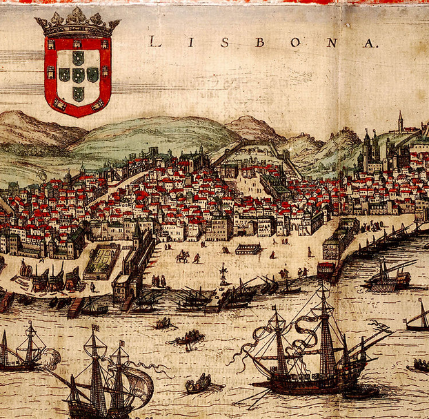

<!DOCTYPE html>
<html>
<head>
    
    <meta http-equiv="content-type" content="text/html; charset=UTF-8" />
    
        <script>
            L_NO_TOUCH = false;
            L_DISABLE_3D = false;
        </script>
    
    <style>html, body {width: 100%;height: 100%;margin: 0;padding: 0;}</style>
    <style>#map {position:absolute;top:0;bottom:0;right:0;left:0;}</style>
    <script src="https://cdn.jsdelivr.net/npm/leaflet@1.9.3/dist/leaflet.js"></script>
    <script src="https://code.jquery.com/jquery-3.7.1.min.js"></script>
    <script src="https://cdn.jsdelivr.net/npm/bootstrap@5.2.2/dist/js/bootstrap.bundle.min.js"></script>
    <script src="https://cdnjs.cloudflare.com/ajax/libs/Leaflet.awesome-markers/2.0.2/leaflet.awesome-markers.js"></script>
    <link rel="stylesheet" href="https://cdn.jsdelivr.net/npm/leaflet@1.9.3/dist/leaflet.css"/>
    <link rel="stylesheet" href="https://cdn.jsdelivr.net/npm/bootstrap@5.2.2/dist/css/bootstrap.min.css"/>
    <link rel="stylesheet" href="https://netdna.bootstrapcdn.com/bootstrap/3.0.0/css/bootstrap.min.css"/>
    <link rel="stylesheet" href="https://cdn.jsdelivr.net/npm/@fortawesome/fontawesome-free@6.2.0/css/all.min.css"/>
    <link rel="stylesheet" href="https://cdnjs.cloudflare.com/ajax/libs/Leaflet.awesome-markers/2.0.2/leaflet.awesome-markers.css"/>
    <link rel="stylesheet" href="https://cdn.jsdelivr.net/gh/python-visualization/folium/folium/templates/leaflet.awesome.rotate.min.css"/>
    
            <meta name="viewport" content="width=device-width,
                initial-scale=1.0, maximum-scale=1.0, user-scalable=no" />
            <style>
                #map_20d3bf84a372fe97e5512f970895f100 {
                    position: relative;
                    width: 100.0%;
                    height: 100.0%;
                    left: 0.0%;
                    top: 0.0%;
                }
                .leaflet-container { font-size: 1rem; }
            </style>
        
</head>
<body>
    
    
            <div class="folium-map" id="map_20d3bf84a372fe97e5512f970895f100" ></div>
        
</body>
<script>
    
    
            var map_20d3bf84a372fe97e5512f970895f100 = L.map(
                "map_20d3bf84a372fe97e5512f970895f100",
                {
                    center: [38.72533, -9.15002],
                    crs: L.CRS.EPSG3857,
                    zoom: 12,
                    zoomControl: true,
                    preferCanvas: false,
                }
            );

            

        
    
            var tile_layer_051e901a5dd74ea2d4fe3c44c1a13178 = L.tileLayer(
                "https://tile.openstreetmap.org/{z}/{x}/{y}.png",
                {"attribution": "\u0026copy; \u003ca href=\"https://www.openstreetmap.org/copyright\"\u003eOpenStreetMap\u003c/a\u003e contributors", "detectRetina": false, "maxNativeZoom": 19, "maxZoom": 19, "minZoom": 0, "noWrap": false, "opacity": 1, "subdomains": "abc", "tms": false}
            );
        
    
            tile_layer_051e901a5dd74ea2d4fe3c44c1a13178.addTo(map_20d3bf84a372fe97e5512f970895f100);
        
    
            var tile_layer_2ae1fdc2a9f945aa66cce2100963525d = L.tileLayer(
                "https://tile.openstreetmap.org/{z}/{x}/{y}.png",
                {"attribution": "\u0026copy; \u003ca href=\"https://www.openstreetmap.org/copyright\"\u003eOpenStreetMap\u003c/a\u003e contributors", "detectRetina": false, "maxNativeZoom": 19, "maxZoom": 19, "minZoom": 0, "noWrap": false, "opacity": 1, "subdomains": "abc", "tms": false}
            );
        
    
            tile_layer_2ae1fdc2a9f945aa66cce2100963525d.addTo(map_20d3bf84a372fe97e5512f970895f100);
        
    
            var tile_layer_21ec7b9f6b3b8cf479932891f14738f6 = L.tileLayer(
                "CartoBD Voyager",
                {"attribution": "CartoDB Voyager", "detectRetina": false, "maxNativeZoom": 18, "maxZoom": 18, "minZoom": 0, "noWrap": false, "opacity": 1, "subdomains": "abc", "tms": false}
            );
        
    
            tile_layer_21ec7b9f6b3b8cf479932891f14738f6.addTo(map_20d3bf84a372fe97e5512f970895f100);
        
    
            var tile_layer_6720982d4801c3cd1dbbfe416ef72906 = L.tileLayer(
                "Stamen Terrain",
                {"attribution": "Stamen Terrain", "detectRetina": false, "maxNativeZoom": 18, "maxZoom": 18, "minZoom": 0, "noWrap": false, "opacity": 1, "subdomains": "abc", "tms": false}
            );
        
    
            tile_layer_6720982d4801c3cd1dbbfe416ef72906.addTo(map_20d3bf84a372fe97e5512f970895f100);
        
    
            var layer_control_507493a542a0c2e9b84edf29354c8e9a_layers = {
                base_layers : {
                    "openstreetmap" : tile_layer_2ae1fdc2a9f945aa66cce2100963525d,
                    "cartobdvoyager" : tile_layer_21ec7b9f6b3b8cf479932891f14738f6,
                    "stamenterrain" : tile_layer_6720982d4801c3cd1dbbfe416ef72906,
                },
                overlays :  {
                },
            };
            let layer_control_507493a542a0c2e9b84edf29354c8e9a = L.control.layers(
                layer_control_507493a542a0c2e9b84edf29354c8e9a_layers.base_layers,
                layer_control_507493a542a0c2e9b84edf29354c8e9a_layers.overlays,
                {"autoZIndex": true, "collapsed": true, "position": "topright"}
            ).addTo(map_20d3bf84a372fe97e5512f970895f100);

        
    
            var marker_7c7c6438b1b41be00cbfde390ecec2cf = L.marker(
                [38.72533, -9.15002],
                {}
            ).addTo(map_20d3bf84a372fe97e5512f970895f100);
        
    
            var icon_c7615d23ae8acf7a58add69ed15e0987 = L.AwesomeMarkers.icon(
                {"extraClasses": "fa-rotate-0", "icon": "info-sign", "iconColor": "white", "markerColor": "green", "prefix": "glyphicon"}
            );
            marker_7c7c6438b1b41be00cbfde390ecec2cf.setIcon(icon_c7615d23ae8acf7a58add69ed15e0987);
        
    
        var popup_b9d779b108a0fe95d988274eb4cdcc05 = L.popup({"maxWidth": 300});

        
            
                var html_7f17eacc35db1a5521cb2914fde17b50 = $(`<div id="html_7f17eacc35db1a5521cb2914fde17b50" style="width: 100.0%; height: 100.0%;">     <h1><b>Lisboa, Portugal</b></h1>     <p>Lisboa é a capital de Portugal e a cidade mais populosa do país. Tem uma população de 506 892 habitantes, dentro dos seus limites administrativos. Na Área Metropolitana de Lisboa, residem 2 821 697 pessoas (2011), sendo por isso a maior e mais populosa área metropolitana do país. Lisboa é o centro político de Portugal, sede do Governo e da residência do chefe de Estado. É o principal centro económico do país, sendo uma das cidades mais desenvolvidas da União Europeia, com um PIB superior à média da região. É ainda a cidade mais rica de Portugal, com um PIB per capita de 23 559 euros (paridade do poder de compra), tendo a segunda maior conta bancária domiciliada na cidade, apenas atrás de Madrid, na Península Ibérica. É a nona cidade mais rica do sul da Europa, depois de Madrid, Barcelona, Milão, Roma, Atenas, Nápoles, Turim e Valência.</p>      </div>`)[0];
                popup_b9d779b108a0fe95d988274eb4cdcc05.setContent(html_7f17eacc35db1a5521cb2914fde17b50);
            
        

        marker_7c7c6438b1b41be00cbfde390ecec2cf.bindPopup(popup_b9d779b108a0fe95d988274eb4cdcc05)
        ;

        
    
    
            marker_7c7c6438b1b41be00cbfde390ecec2cf.bindTooltip(
                `<div>
                     Sporting
                 </div>`,
                {"sticky": true}
            );
        
</script>
</html>